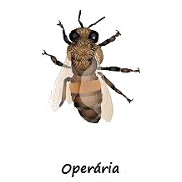

 As operárias realizam todo o trabalho para a manutenção da colmeia. Elas executam atividades distintas, de acordo com a idade, desenvolvimento glandular e necessidade da colônia. As operárias não se reproduzem. Isso acontece porque, na fase de larva, elas recebem alimento menos nutritivo e em menor quantidade que a rainha.
Além disso, a rainha produz feromônios que inibem o desenvolvimento do sistema reprodutor das operárias na fase adulta. Em compensação, elas possuem órgãos de defesa e trabalho perfeitamente desenvolvidos, muitos dos quais não são observados na rainha e no zangão, como a corbícula (onde é feito o transporte de materiais sólidos) e as glândulas de cera.
 Você sabia?? Sabia que o mel é o único alimento
que não é perecível?
Você sabia?? Sabia que o mel é o único alimento
que não é perecível?